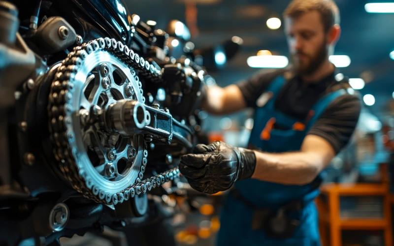

Expert Motorcycle Tyre Change For Every Journey.
Your motorcycle tyres play an important role in stability, grip and overall riding comfort. At MotoFix Garage, we provide professional tyre inspection and replacement services to help keep your motorcycle road-ready.


Get the Right Tyres For Your Motorcycle
Motorcycle tyres are essential for maintaining grip, stability and handling on different road surfaces.
Over time, tyres can become worn, damaged or unsuitable for safe riding. Regular inspection helps identify when replacement may be necessary.
At MotoFix Garage, we inspect tyre condition and help you choose suitable replacement tyres according to your motorcycle specifications and manufacturer's recommendations.
Schedule Your Tyre InspectionComplete Motorcycle Tyre Care Solutions
From tyre inspection to replacement, we help maintain your motorcycle's tyre condition.
Tyre Condition Inspection
Check tyres for visible damage, cracks and signs of excessive wear.
Tyre Replacement
Replace worn or damaged tyres with suitable replacement options.
Tyre Pressure Check
Check tyre pressure according to manufacturer recommendations.
Tread Depth Check
Inspect tyre tread condition to identify signs of wear.
Tyre Size Verification
Verify tyre size and specifications before recommending a replacement.
Wheel Inspection
Check wheel condition for visible damage or other concerns.
Tyre Fitting
Carry out professional tyre fitting using suitable equipment.
Final Safety Check
Check tyre fitting, pressure and overall condition before delivery.
Benefits of Proper Tyre Maintenance
Regular tyre checks help maintain suitable riding conditions and identify problems early.
Improved Safety
Proper tyre condition supports safer motorcycle operation.
Better Road Grip
Suitable tyres help maintain contact with the road surface.
Improved Handling
Correct tyre condition supports predictable motorcycle handling.
Proper Tyre Pressure
Correct pressure helps maintain tyre performance and durability.
Our Tyre Replacement Process
We follow a simple and professional process to help keep your motorcycle tyres in good condition.
Initial Inspection
We inspect your motorcycle tyres and understand your concerns.
Tyre Assessment
We check tyre wear, damage, size and replacement requirements.
Tyre Replacement
We carry out the approved tyre replacement and fitting work.
Final Inspection
We verify tyre fitting and pressure before completing the service.
Ready for a Better Ride? Check Your Tyres Today
Don't ignore worn or damaged tyres. Book a professional tyre inspection and replacement service at MotoFix Garage.
Book Your Tyre Service